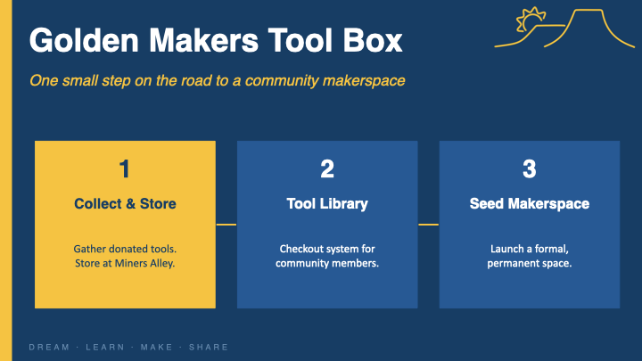
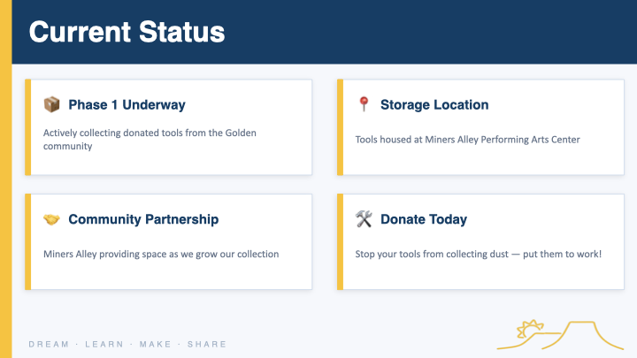
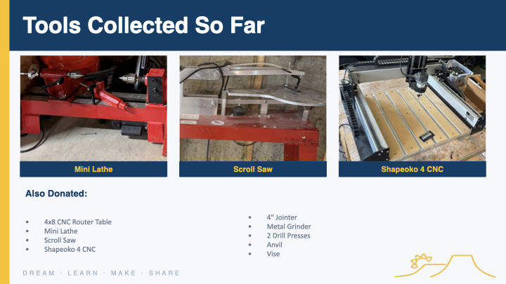
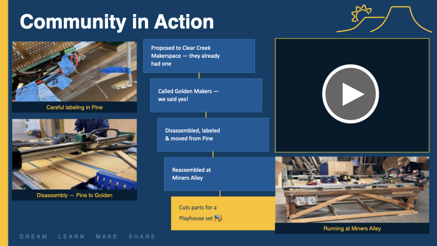
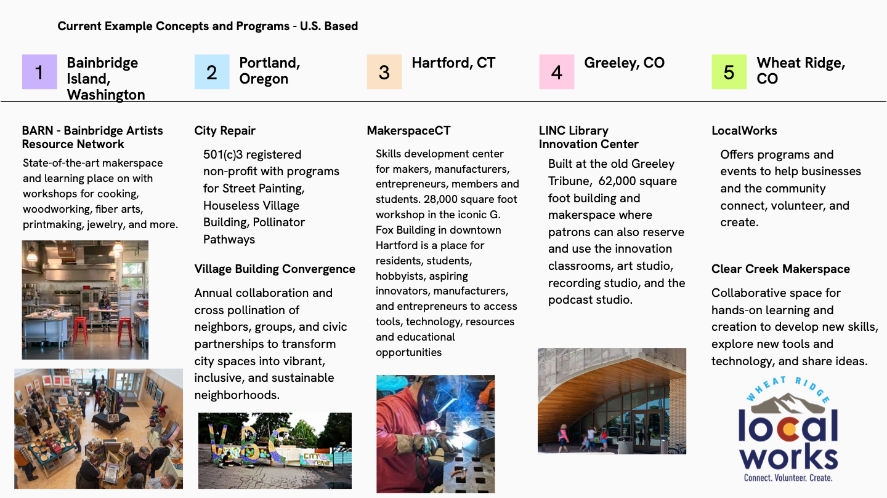
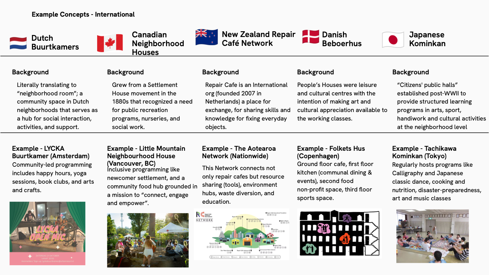

Places in Golden are good for connecting with who you bring, not so much who you run into. Especially in winter.
It takes time. I do a lot of one-off things at various places in Golden, but I'm not seeing the same people over and over again — I'm not getting a chance to learn their stories and tell them mine.
Even 15 minutes away is too far for me to go more than a couple times per month. Location matters — I'd love to spend time at Clear Creek Makerspace, but it's just too far.
I'd love a family-friendly creative space — my evenings and weekends with my kids deserve indoor options we can do TOGETHER with other families.
A coffee shop + art studio + engineering/maker space all going on in one building — each inspiring the others. Good natural light, electrical outlets aplenty, smaller rooms to meet and share projects.
Open 24/7 to paying members. Run by a strong group of core volunteers who love sharing what they're passionate about with insatiably curious people. A diverse group of all ages who want to learn, create, and share ideas.
Ages 0–110 doing things TOGETHER. I don't see any reason we couldn't attend a photography, cooking, or pottery class accessible to 3-year-olds, 30-year-olds, 60-year-olds, and 90-year-olds.
Welding. 3D printing. AI learning.





